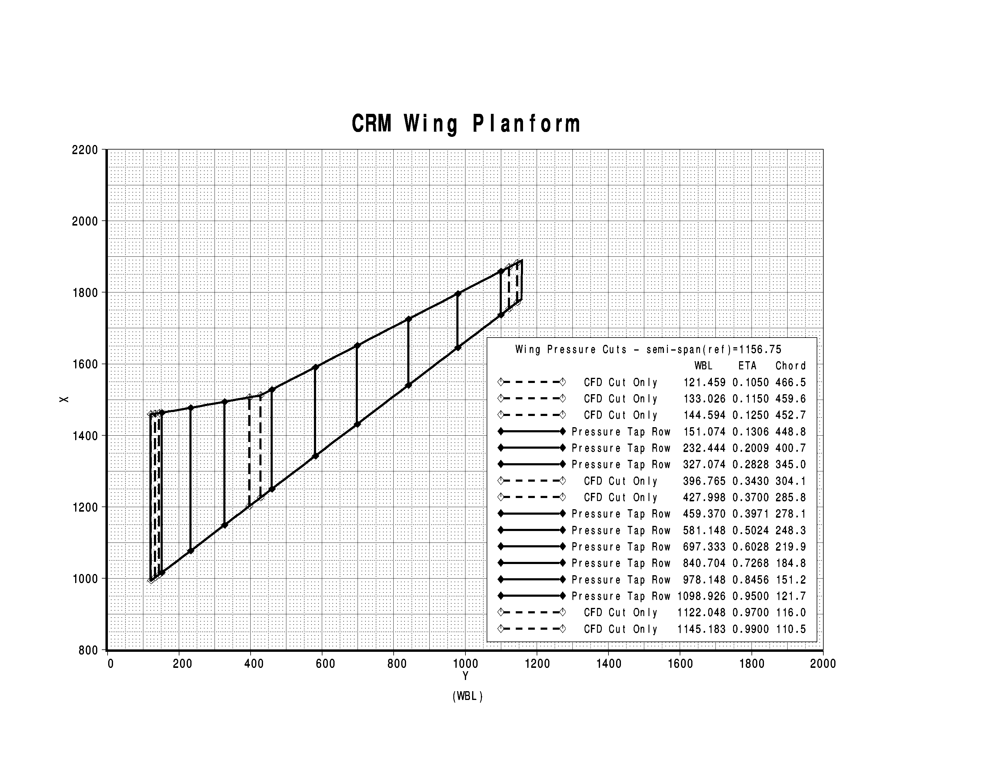

DPW-6 Data Submittal Forms and Postprocessing Information
Data Submissions, Errata, and Clarifications
DPW6 is collecting data using a Tecplot-readable format and template data forms are provided below.
Please complete as much of each form as possible, including the auxiliary data at the top of each
form identifying the dataset.
Forms are provided for solver metrics, force/moment data,
side-of-body separation data, trailing edge separation data, and sectional cut data.
A Tecplot macro is also provided that will automatically extract data on the surface at the
required cut locations (see below for more details of cut locations).
Please email Tecplot-readable Data Submittal Forms to DPW6 at
aiaadpw@gmail.com
Tecplot Macro Scripts
Tecplot Macro Scripts are provided for extracting wing section and nacelle pressure cuts:
CASE 1 - Verification Study:
Please update the TurbulenceModel variable in the template using the common turbulence model nomenclature
from the TBWG web site.
Please update the GridID variable in the templates from "CommonMB", "CommonOverset", etc.
using the grid nomenclature from the TBWG web site.
Cases 2-6 - CRM Configuration Studies:
For Cases 2-6, please submit a single set of forms for a common solution family
based on the same solver, turbulence model, grid type, etc.
A separate set of forms should be submitted for each solver, turbulence model, grid type, etc.
Case 4 results can be included in the forms that also apply to the most similar grid type.
Otherwise Case 4 results can be given in a separate set of forms.
Please update the GridID variable in the templates from "CommonMB", "CommonOverset", etc. using the
nomenclature from the DPW6 provided grids website ftp://cmb24.larc.nasa.gov/outgoing/DPW6
CASE 2 - CRM Nacelle-Pylon Drag Increment / Grid Convergence Study:
Note: Case 2A refers to the Wing-Body configuration; Case 2B refers to the Wing-Body-Nacelle-Pylon configuration.
CASE 3 - CRM WB Static Aero-Elastic Effect:
Please append Case 3 data to above files with Case 2 data:
- DPW-VI.DataForm_ForceMoment_v4.dat
- DPW-VI.DataForm_Sectional_lift_and_moment_v5.dat
- DPW-VI.DataForm_SectionalCuts_v4.dat
- DPW-VI.DataForm_SOBSeparation_v4.dat
- DPW-VI.DataForm_TESeparation_v4.dat
CASE 4 - CRM WB Grid Adaptation [Optional]:
Only data for one flow condition is asked for, however, the forms can accept results for additional angles of attack.
Please append Case 4 data to above files with Case 2 data:
- DPW-VI.DataForm_ForceMoment_v4.dat
- DPW-VI.DataForm_Sectional_lift_and_moment_v5.dat
- DPW-VI.DataForm_SectionalCuts_v4.dat
- DPW-VI.DataForm_SOBSeparation_v4.dat
- DPW-VI.DataForm_TESeparation_v4.dat
CASE 5 - CRM WB Coupled Aero-Structural Simulation [Optional]:
DPW-VI.DataForm_Case5_BendingTwist_v4.dat
Only data for one flow condition was requestec, however, the forms can accept results for additional angles of attack.
Please append Case 5 data to above files with Case 2 data:
- DPW-VI.DataForm_ForceMoment_v4.dat
- DPW-VI.DataForm_Sectional_lift_and_moment_v5.dat
- DPW-VI.DataForm_SectionalCuts_v4.dat
- DPW-VI.DataForm_SOBSeparation_v4.dat
- DPW-VI.DataForm_TESeparation_v4.dat
CASE 6 - CRM WB User Generated Grids [Optional]:
Case 6 has not been formally requested, but is a placeholder for solutions based on user generated grids.
Please provide some grid name identifier on line
AUXDATA GridId = "????."
Please append Case 5 data from user generated grids to above files with Case 2 data:
- DPW-VI.DataForm_ForceMoment_v4.dat
- DPW-VI.DataForm_Sectional_lift_and_moment_v5.dat
- DPW-VI.DataForm_SectionalCuts_v4.dat
- DPW-VI.DataForm_SOBSeparation_v4.dat
- DPW-VI.DataForm_TESeparation_v4.dat
Wing Sections and Nacelle Pressure Cut Locations


NASA Official Responsible for Content
Joseph H. Morrison
Last Updated
14 May 2016